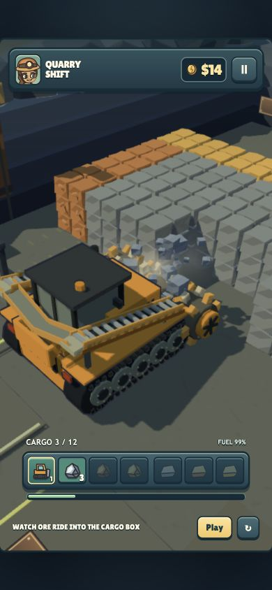
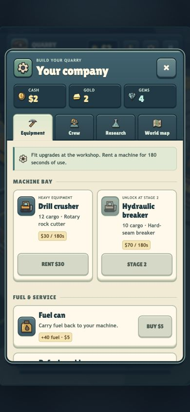
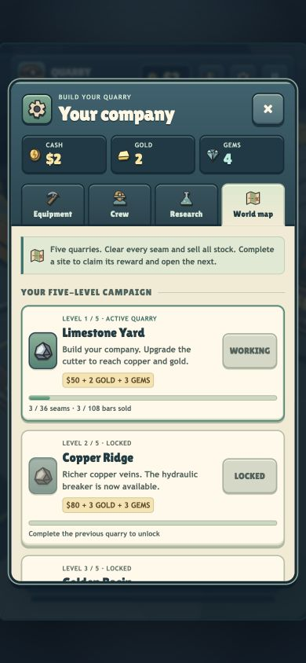

Movement respects the whole machine.
Routes account for the chassis and cutter footprint. Mining requires front contact; unloading requires a stopped, parked machine with its skip raised.
A playable mining-company prototype
Start with a crusher. Follow every chunk from the rock face to the cash register. Turn your first haul into a better machine—and a growing quarry crew.
Built by SonaArajyan03

One readable loop
Every step creates the reason for the next one. Explore the loop below.
Front contact
Tap a rock to drive into cutting contact, or steer manually. Only the front drum damages the seam. The lower face breaks first, making the action easy to follow.
Try the loop yourself
Tap a rock to mine. When the cargo fills, deliver it to the refinery, collect the finished bars and sell them. Use your earnings at the workshop.
Choose a mode to load the game.
Touch or mouse to select a destination.
Joystick, WASD or arrow keys to move.
WebGL 2 required. No account or download.

A small machine.
A whole company to build.
A bigger operation, earned
A larger cargo box means fewer trips. A stronger cutter opens harder ore. Crew members physically mine, carry and sell, then rest when their stamina runs low.
The campaign moves through five finite quarries: Limestone Yard, Copper Ridge, Golden Basin, Redrock Canyon and Summit Quarry. Each site ends when its rocks are mined and its stock is sold.
See how the systems fit together

Under the surface
The interesting challenge is keeping the visible action, physical movement and economy in agreement.
Routes account for the chassis and cutter footprint. Mining requires front contact; unloading requires a stopped, parked machine with its skip raised.
Rock creates real inventory. Ore on a belt is excluded from the visible cargo pile until it arrives. The refinery processes stock over time; only sold finished bars generate income.
The main action points to mining, refining, collecting or selling. Low fuel and expired rentals replace it with recovery guidance. Extra company statistics live in menus.
The opening checkpoint is reached through real mining, sales and a paid rental. The guided sequence uses ordinary routes, transfers and purchases instead of staged rewards.
Built with Three.js and JavaScript. The renderer uses native antialiasing, a directional shadow and toon materials, with no fullscreen postprocessing. Bounded effect pools show ore, debris and sale coins.
The five-quarry campaign saves locally with validated, versioned snapshots. Demonstration runs are isolated from the player's saved company. The prototype is deliberately silent.
Gameplay inspiration: Bulldozer Master: Crush & Mine. Quarry Shift uses original code-native art, branding and balance.
This is a work-in-progress game prototype. No CPI, retention, revenue or market-validation result is claimed.

Try a load, inspect the mechanics, and share a developer's perspective.